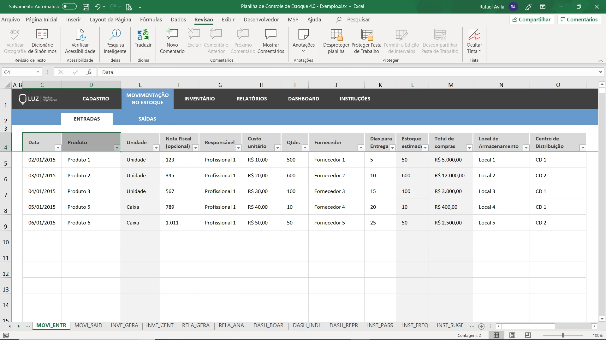

Problema
Percorra o caminho do trabalho gerencial com modernidade, no passado a exasperante tarefa de controlar dados levava muitos a dores de cabeça devido a sua intensa carga neural.
Ideia
Agilize sua vida com o programa EstoqueCerto que te facilitara todos os assuntos relacionados a controle de estoque e apuração de custos, facilite seu trabalho e relaxe.
Nicho
O "EstoqueCerto" ajuda qualquer pessoa que trabalhe no gerenciamento do giro de estoque e finanças relacionadas ao ramo Gastronomico, facilitando sua tarefa atravéz da automatização do controle, criando analises em tempo real, integrando diretamente com os fornecedores ou reduzindo custos por evitar desperdício, o "EstoqueCerto" servira para você
Proposta de valor
O valor do "EstoqueCerto" vem não apenas por ser uma base de dados para organizar informações, mas tambem devido a forma sutil que ele facilita todos os aspectos relacionados facilitando todo o processo de uma forma inovadora e genial para a sua empresa.
